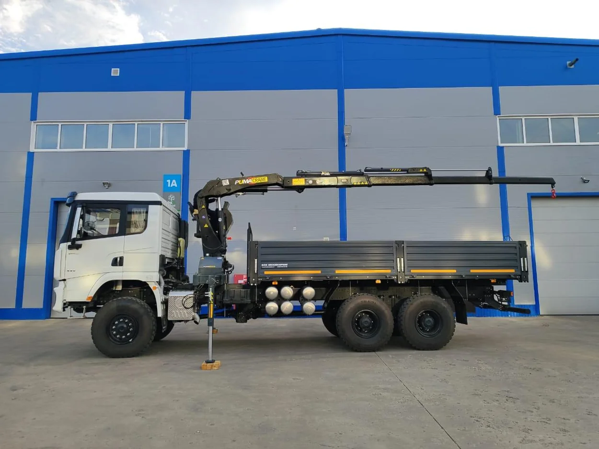

Техническое обслуживание КМУ. Что проверять и когда обращаться в сервис
След масла на соединении, заедающий рычаг или медленное движение стрелы дают механику разные исходные данные. Полезно записать, где и при каких условиях проявился каждый признак.

Гидравлика и подвижные узлы
При осмотре обратите внимание на потёртости и трещины рукавов, а также на следы масла у соединений. Проверяйте уровень рабочей жидкости по инструкции к конкретной модели. Та же инструкция определяет марку масла, точки смазки шарниров и интервалы обслуживания. Поиск утечки рукой на системе под давлением опасен.

Опоры, управление и электрика
Осматривайте опоры на предмет трещин и деформаций. Если опора не фиксируется, рычаг заедает или появляется ошибка ограничителя нагрузки, прекратите работу и передайте информацию специалисту. При диагностике могут потребоваться проверка механизма фиксации, приводов управления, проводки и датчиков.
Что сообщить сервису
Запишите модель крана и точный симптом. Если стрела стала двигаться медленнее, укажите, какое движение изменилось и повторяется ли это после прогрева. При сообщении об ошибке приложите фотографию дисплея, а при заказе детали передайте её каталожный номер. Эти сведения помогут сервису выбрать нужную проверку и уточнить комплектацию.